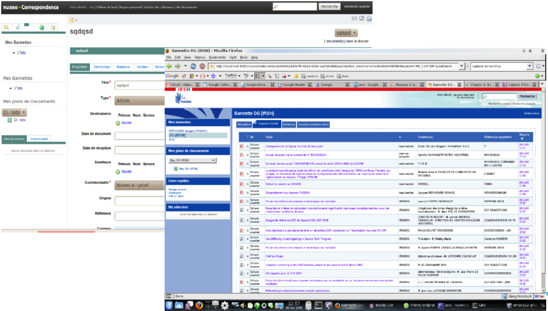
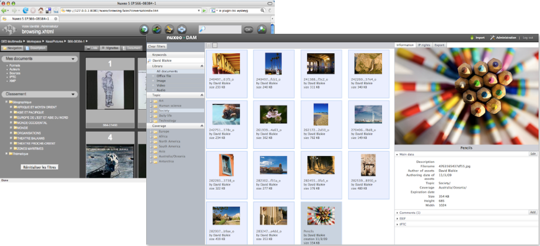
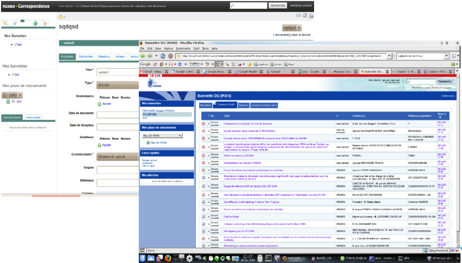
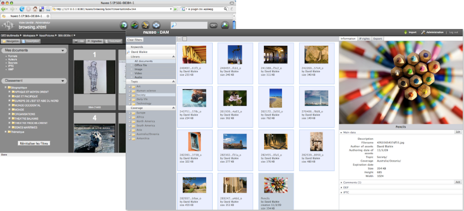
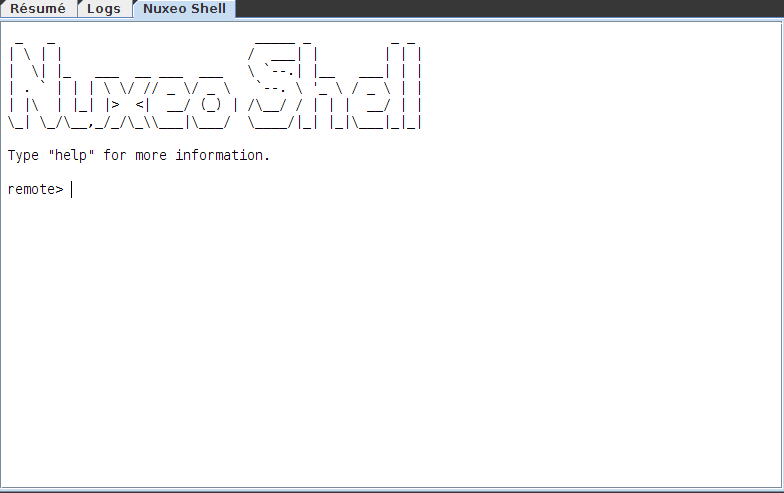
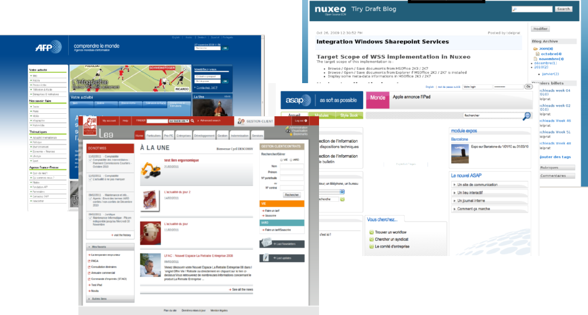
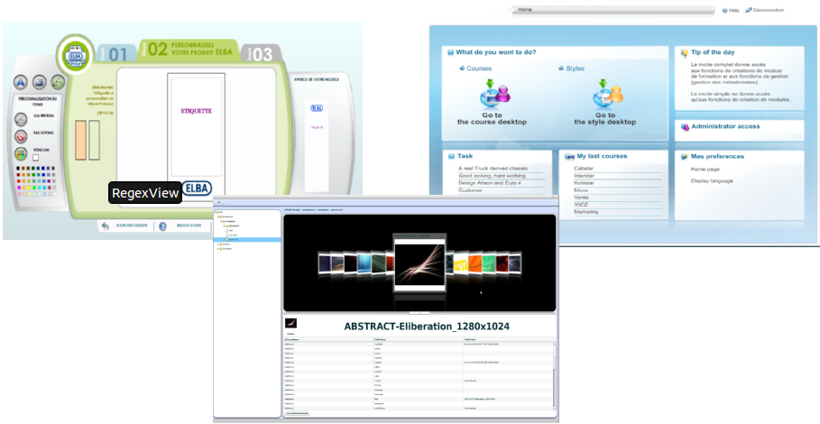
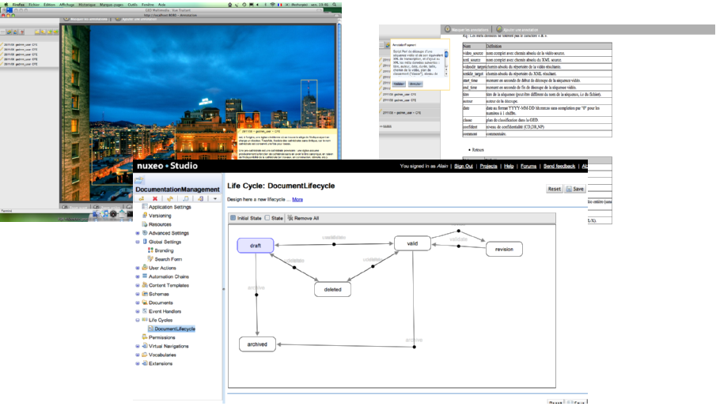

nuxeo / Trainings
Introduction to the Nuxeo Platform
###Introduction
####Nuxeo Presentation
####Packaging, Distributions, Products
### Nuxeo – The Company
#### Nuxeo
- Founded in 2000, more than 500 customers and 5 000 installations
- ~50 people in the company, 70% engineers
- Based in France and USA
- Nuxeo supports customers in creating, building, maintaining, deploying and operating applications
#### Products and services
- Nuxeo Connect subscription offering for maintenance, support, and access to online services
- Nuxeo covers the full lifecycle of applications:
- Application Designer: Nuxeo Studio
- Development Environment: Nuxeo IDE (Eclipse), Maven Tooling
- Testing Toolset: Unit (JUnit), Functional (Selenium / Webdriver), Performance (Funkload)
- Deployment tools: Nuxeo Marketplace, Update Center
###Nuxeo − Type of Projects
#### Business Applications
- Intranet
- Business Workflows: Invoice Management, Purchase Requests, Case Management, Contract Management, Software Documentation Management
- Documents Repository: Quality, Process, ...
- Asset Repository
- Mail Management
#### Central Repository
- Backend server used to store and share data from / to various applications
###Nuxeo − Sample Implementations
####Document, Case, Digital Assets Management, Shell
 




####Web, Public-Facing, Rich Internet Applications



###Next?
- Back to the [training agenda](0.0_Agenda.html#day-1)
- [Technical Overview](1.20_Technical_overview.html)
←
→
/
#